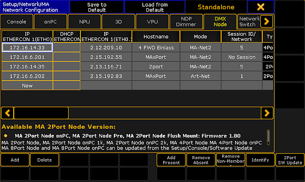

Delete the MA xPort Nodes in the Network Configuration
Follow these guidelines to delete the MA xPort Nodes in the network configuration.
- Open the MA Network Configuration.
-Press Setup and tap MA Network Configuration.
-The window MA Network Configuration opens.
- Tap DMX Node.

MA Network Configuration – DMX Node
- To delete single MA xPort Nodes, select the corresponding MA xPort Node and tap Delete.
- To delete several MA xPort Nodes, use the "lasso" selection in one of the columns following IP ETHERCON 1, and tap Delete.
The MA xPort Nodes have been deleted in the network configuration.